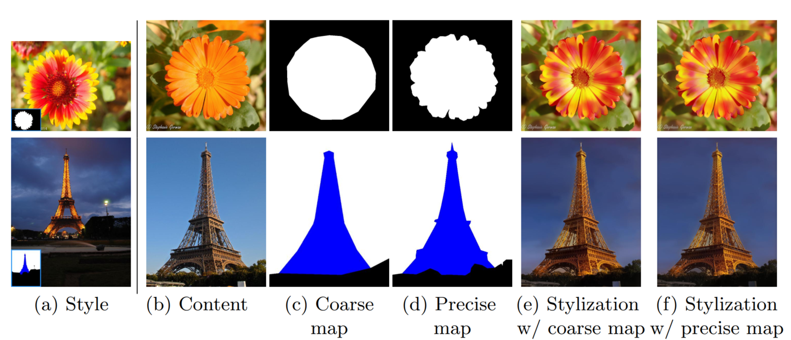

<!DOCTYPE html>
<html lang="en">

<head>
  <meta charset="utf-8" />
    
  <meta name="description" content="Bowen&#39;s Blog" />
  
  <meta name="viewport" content="width=device-width, initial-scale=1, maximum-scale=1" />
  <title>
    Neural Style Transfer Review IV |  Bowen&#39;s Blog
  </title>
  <meta name="generator" content="hexo-theme-yilia-plus">
  
  <link rel="shortcut icon" href="/logo.ico" />
  
  
<link rel="stylesheet" href="/css/main.css">

  
  <script src="https://cdn.jsdelivr.net/npm/pace-js@1.0.2/pace.min.js"></script>
  
  

  

<link rel="alternate" href="/atom.xml" title="Bowen's Blog" type="application/atom+xml">
</head>

</html>

<body>
  <div id="app">
    <main class="content">
      <section class="outer">
  <article id="post-Neural-Style-Transfer-Review-IV" class="article article-type-post" itemscope
  itemprop="blogPost" data-scroll-reveal>

  <div class="article-inner">
    
    <header class="article-header">
       
<h1 class="article-title sea-center" style="border-left:0" itemprop="name">
  Neural Style Transfer Review IV
</h1>
  

    </header>
    

    
    <div class="article-meta">
      <a href="/2020/04/19/Neural-Style-Transfer-Review-IV/" class="article-date">
  <time datetime="2020-04-19T12:27:03.000Z" itemprop="datePublished">2020-04-19</time>
</a>
      
  <div class="article-category">
    <a class="article-category-link" href="/categories/Review/">Review</a>
  </div>

      
      
<div class="word_count">
    <span class="post-time">
        <span class="post-meta-item-icon">
            <i class="ri-quill-pen-line"></i>
            <span class="post-meta-item-text"> 字数统计:</span>
            <span class="post-count">1.6k字</span>
        </span>
    </span>

    <span class="post-time">
        &nbsp; | &nbsp;
        <span class="post-meta-item-icon">
            <i class="ri-book-open-line"></i>
            <span class="post-meta-item-text"> 阅读时长≈</span>
            <span class="post-count">6分钟</span>
        </span>
    </span>
</div>

      
    </div>
    

    
    
    <div class="tocbot"></div>


    

    
    <div class="article-entry" itemprop="articleBody">
      
      

      
      <h1 id="Neural-Style-Transfer-Review-IV"><a href="#Neural-Style-Transfer-Review-IV" class="headerlink" title="Neural Style Transfer Review IV"></a>Neural Style Transfer Review IV</h1><h2 id="数据集"><a href="#数据集" class="headerlink" title="数据集"></a>数据集</h2><h3 id="Flickr-30k"><a href="#Flickr-30k" class="headerlink" title="Flickr 30k"></a>Flickr 30k</h3><p>30k 图片，每张图片 5 句标注，并且和图中的实体有对应关系。但像 “outside, parade” 这样的场景或者事件信息没有对应的实体标注。</p>
<h3 id="MS-COCO"><a href="#MS-COCO" class="headerlink" title="MS COCO"></a>MS COCO</h3><p>200k 有标注，每个图片 5 句标注，但多是以物体为主。</p>
<h3 id="Google’s-Conceptual-Captions"><a href="#Google’s-Conceptual-Captions" class="headerlink" title="Google’s Conceptual Captions"></a>Google’s Conceptual Captions</h3><p>使用互联网上带有 Alt-text HTML 标签的图片，做一定的预处理之后得到 3M 图片</p>
<a id="more"></a>
<h2 id="Photorealistic-Style-Transfer"><a href="#Photorealistic-Style-Transfer" class="headerlink" title="Photorealistic Style Transfer"></a>Photorealistic Style Transfer</h2><h3 id="Deep-Photo-Style-Transfer"><a href="#Deep-Photo-Style-Transfer" class="headerlink" title="Deep Photo Style Transfer"></a>Deep Photo Style Transfer</h3><p>Luan et al. CVPR 2017.</p>
<p>作者想解决的还是真实照片中的风格迁移问题，希望效果尽量真实，细节符合真实观感。作者的工作基于 Gatys 的慢速风格迁移，在损失函数中加入正则化项（平滑），并且合理使用图像的语义标签进一步提升迁移效果。</p>
<p>平滑操作主要通过希望相同内容邻域之内的像素尽量相似，使用 Matting Laplacian 进行建模：</p>
<script type="math/tex; mode=display">
\mathcal{L}_m = \sum_{c=1}^3V_c[O]^T\mathcal{M}_IV_c[O]</script><p>其中，$V_c[O]$ 是输出图片通道 $c$ 的向量化形式，$\mathcal{M}_I$ 是由输入内容图片计算而来的矩阵。</p>
<p>合理利用语义标签能做到更精确的风格转换，只提取希望区域的风格。作者自己生成了一些风格标签分类，包含常见的场景分类（天空，建筑物，海洋等等），之后使用 Gram 矩阵求风格的时候加入包含语义的 MASK 即可 <em>（具体细节可能得参考代码）</em>。</p>
<p>缺点，基于优化的慢速风格迁移比较慢，内容风格差异较大时迁移效果不好。</p>
<h3 id="A-Closed-form-Solution-to-Photorealistic-Image-Transfer"><a href="#A-Closed-form-Solution-to-Photorealistic-Image-Transfer" class="headerlink" title="A Closed-form Solution to Photorealistic Image Transfer"></a>A Closed-form Solution to Photorealistic Image Transfer</h3><p>Li et al. ECCV 2018.</p>
<p>之前的 neural style transfer 在艺术作品的风格迁移方面表现较好，但是在真实照片中的表现较差，经常出现空间扭曲等不协调的情况。Luan et al. 提出在原有的损失函数上加入正则化项，效果有所改进，但部分细节还是与对应的语义不符。作者提出的方法在效果上和速度上都比 Luan et al. 有很大提升。</p>
<p>主要处理步骤为风格转换+平滑处理。</p>
<p>风格转换部分基于 WCT 算法：</p>
<script type="math/tex; mode=display">\hat{H}_{c}=E_{c} D_{c}^{-\frac{1}{2}} E_{c}^{\top} H_{c}</script><script type="math/tex; mode=display">\hat{H}_{c s}=E_{s} D_{s}^{\frac{1}{2}} E_{s}^{\top} \hat{H}_{c}</script><p>即令输出图片的协方差匹配风格图片的协方差，但这样输出图片可能会有一定的扭曲现象。于是作者提出了 PhotoWCT，考虑到 encode 时的 max-pooling 操作会丢失很多空间特征信息，而传统的上采样（插值+卷积）很难恢复这些被破坏的空间特征，所以作者提出使用 unpooling (之前有工作中采用 unpooling 效果很好，能恢复一定的空间信息) 代替 upsampling，实验中也发现这样的 PhotoWCT 效果好于 WCT，但还不能到达令人满意的程度。</p>
<p>对于 PhotoWCT 之后的图像，需要进一步进行平滑操作。平滑的目标是：</p>
<ul>
<li>内容图片中，邻域内相同内容的像素在输出图片中要尽可能相似；</li>
<li>平滑之后的图像跟 PhotoWCT 不能相差太远。</li>
</ul>
<p>首先定义 affinity matrix 表征各像素间的相似关系，之后优化目标被定义为：</p>
<script type="math/tex; mode=display">\arg \min _{r} \frac{1}{2}\left(\sum_{i, j=1}^{N} w_{i j}\left\|\frac{r_{i}}{\sqrt{d_{i i}}}-\frac{r_{j}}{\sqrt{d_{j j}}}\right\|^{2}+\lambda \sum_{i=1}^{N}\left\|r_{i}-y_{i}\right\|^{2}\right)</script><p>其中，$y_i$ 是在 PhotoWCT 处理后的图片中像素 i 的颜色，$r_i$ 是输出图片中像素 i 的颜色，$d_ii = \sum_{j}w_{ij}$ 相当于是一个归一化项，$\lambda$ 控制前后两项 loss 的权重关系。</p>
<p>损失函数的灵感来源于 graph-based ranking algorithms，之后对这个二次凸优化问题可以求得闭式解：</p>
<script type="math/tex; mode=display">
R^* = (1-\alpha)(I-\alpha S)^{-1}Y</script><p>其中，$\alpha = \frac{1}{1+\lambda}$，$S = D^{-\frac{1}{2}}WD^{-\frac{1}{2}}, D=diag\{d_{11},d_{22}, d_{33}, \dots, d_{NN}\}$ 为从 $I_c$ 推导而来的标准化的拉普拉斯矩阵，由于 $W$ 比较稀疏，能很快求解得到结果。</p>
<p>对于 $W$ 的选择，比较流行的方法是基于每个像素八邻接的 GaussianAff: $w_{ij} = e^{-|I_i-I_j|^2/\sigma^2}$，其中 $I_i, I_j$ 是 i 像素和它相邻的 j 像素的 RGB 值，$\sigma$ 是需要选择的超参数，但实验发现这个参数非常难选择，很容易造成过平滑（整张图片都被平滑，细节丢失严重）或者不同区域的平滑效果差异显著，风格不同一，于是作者选用 matting affinity，两个图片的相似性是由 local window 中像素的均值和方差决定的，这样避免了超参数选择，实际效果很好。</p>
<p>训练集使用 MSCOCO，值得注意的是算法可以使用语义标签信息来达到更好的转换效果。可以使用语义标签来明确内容和风格图片中对应的匹配区域，并且由于区域平滑的存在，不需要很精确的 mask 就能达到很好的效果。</p>
<p></p>
<p>缺点是在含有花纹的风格转换中，效果很差，很难将花纹转换过来，这可能是因为提出的方法使用了很多平滑效果，导致花纹消失。</p>
<h3 id="A-Closed-Form-Solution-to-Natural-Image-Matting"><a href="#A-Closed-Form-Solution-to-Natural-Image-Matting" class="headerlink" title="A Closed Form Solution to Natural Image Matting"></a>A Closed Form Solution to Natural Image Matting</h3><p>Levin et al. CVPR 2006.</p>
<p>抠图的主要思想是将原始图片建模为前景和背景的加权，目标是提取前景。作者的主要假设是前景和背景在局部小窗口内都是平滑的，也就是<strong>近似</strong>为常数，那么通过对一个二次能量函数的优化，就可以得到哪些部分属于前景（希望抠出来的部分），哪些属于背景。</p>
<p>Matting matrix $L_{(i,j)}$:</p>
<script type="math/tex; mode=display">\sum_{k |(i, j) \in w_{k}}\left(\delta_{i j}-\frac{1}{\left|w_{k}\right|}\left(1+\left(I_{i}-\mu_{k}\right)\left(\Sigma_{k}+\frac{\varepsilon}{\left|w_{k}\right|} I_{3}\right)^{-1}\left(I_{j}-\mu_{k}\right)\right)\right)</script><p>其实可以看作是决定该像素值或者是否为前景的时候，周围像素对其的加权，这也就是上面的 Photo Style Transfer 中使用了 Matting matrix 的原因，无需手动决定参数，权重自动由邻域的方差均值决定。</p>
<h2 id="参考文献"><a href="#参考文献" class="headerlink" title="参考文献"></a>参考文献</h2><p><a href="http://xxx.itp.ac.cn/pdf/1505.04870" target="_blank" rel="noopener">[1] Flickr 30k Entities.</a></p>
<p><a href="https://ai.google.com/research/ConceptualCaptions/download" target="_blank" rel="noopener">[2] Google’s Conceptual Captions</a></p>

      
      <!-- reward -->
      
      <div id="reward-btn">
        打赏
      </div>
      
    </div>
    
    
      <!-- copyright -->
      
        <div class="declare">
          <ul class="post-copyright">
            <li>
              <i class="ri-copyright-line"></i>
              <strong>版权声明： </strong s>
              本博客所有文章除特别声明外，均采用 <a href="https://www.apache.org/licenses/LICENSE-2.0.html" rel="external nofollow"
                target="_blank">Apache License 2.0</a> 许可协议。转载请注明出处！
            </li>
          </ul>
        </div>
        
    <footer class="article-footer">
      
          
<div class="share-btn">
      <span class="share-sns share-outer">
        <i class="ri-share-forward-line"></i>
        分享
      </span>
      <div class="share-wrap">
        <i class="arrow"></i>
        <div class="share-icons">
          
          <a class="weibo share-sns" href="javascript:;" data-type="weibo">
            <i class="ri-weibo-fill"></i>
          </a>
          <a class="weixin share-sns wxFab" href="javascript:;" data-type="weixin">
            <i class="ri-wechat-fill"></i>
          </a>
          <a class="qq share-sns" href="javascript:;" data-type="qq">
            <i class="ri-qq-fill"></i>
          </a>
          <a class="douban share-sns" href="javascript:;" data-type="douban">
            <i class="ri-douban-line"></i>
          </a>
          <!-- <a class="qzone share-sns" href="javascript:;" data-type="qzone">
            <i class="icon icon-qzone"></i>
          </a> -->
          
          <a class="facebook share-sns" href="javascript:;" data-type="facebook">
            <i class="ri-facebook-circle-fill"></i>
          </a>
          <a class="twitter share-sns" href="javascript:;" data-type="twitter">
            <i class="ri-twitter-fill"></i>
          </a>
          <a class="google share-sns" href="javascript:;" data-type="google">
            <i class="ri-google-fill"></i>
          </a>
        </div>
      </div>
</div>

<div class="wx-share-modal">
    <a class="modal-close" href="javascript:;"><i class="ri-close-circle-line"></i></a>
    <p>扫一扫，分享到微信</p>
    <div class="wx-qrcode">
      
    </div>
</div>

<div id="share-mask"></div>
      
      
  <ul class="article-tag-list" itemprop="keywords"><li class="article-tag-list-item"><a class="article-tag-list-link" href="/tags/CV/" rel="tag">CV</a></li><li class="article-tag-list-item"><a class="article-tag-list-link" href="/tags/Style-Transfer/" rel="tag">Style Transfer</a></li></ul>


    </footer>

  </div>

  
  
  <nav class="article-nav">
    
    
      <a href="/2020/04/18/RBTree/" class="article-nav-link">
        <strong class="article-nav-caption">下一篇</strong>
        <div class="article-nav-title">RBTree</div>
      </a>
    
  </nav>


  

  
  
<!-- valine评论 -->
<div id="vcomments-box">
    <div id="vcomments">
    </div>
</div>
<script src="//cdn1.lncld.net/static/js/3.0.4/av-min.js"></script>
<script src='https://cdn.jsdelivr.net/npm/valine@1.3.10/dist/Valine.min.js'></script>
<script>
    new Valine({
        el: '#vcomments',
        app_id: '',
        app_key: '',
        path: window.location.pathname,
        notify: 'false',
        verify: 'false',
        avatar: 'mp',
        placeholder: '给我的文章加点评论吧~',
        recordIP: true
    });
    const infoEle = document.querySelector('#vcomments .info');
    if (infoEle && infoEle.childNodes && infoEle.childNodes.length > 0) {
        infoEle.childNodes.forEach(function (item) {
            item.parentNode.removeChild(item);
        });
    }
</script>
<style>
    #vcomments-box {
        padding: 5px 30px;
    }

    @media screen and (max-width: 800px) {
        #vcomments-box {
            padding: 5px 0px;
        }
    }

    #vcomments-box #vcomments {
        background-color: #fff;
    }

    .v .vlist .vcard .vh {
        padding-right: 20px;
    }

    .v .vlist .vcard {
        padding-left: 10px;
    }
</style>

  

  
  
  

</article>
</section>
      <footer class="footer">
  <div class="outer">
    <ul class="list-inline">
      <li>
        &copy;
        2020
        Bowen
      </li>
      <li>
        
        Powered by
        
        
        <a href="https://hexo.io" target="_blank">Hexo</a> Theme <a href="https://github.com/Shen-Yu/hexo-theme-ayer" target="_blank">Ayer</a>
        
      </li>
    </ul>
    <ul class="list-inline">
      <li>
        
      </li>
      
      <li>
        <!-- cnzz统计 -->
        
      </li>
    </ul>
  </div>
</footer>
      <div class="to_top">
        <div class="totop" id="totop">
  <i class="ri-arrow-up-line"></i>
</div>
      </div>
    </main>
    <aside class="sidebar">
      <button class="navbar-toggle"></button>
<nav class="navbar">
  
  <div class="logo">
    <a href="/"></a>
  </div>
  
  <ul class="nav nav-main">
    
    <li class="nav-item">
      <a class="nav-item-link" href="/">主页</a>
    </li>
    
    <li class="nav-item">
      <a class="nav-item-link" href="/archives">归档</a>
    </li>
    
    <li class="nav-item">
      <a class="nav-item-link" href="/categories">分类</a>
    </li>
    
    <li class="nav-item">
      <a class="nav-item-link" href="/tags">标签</a>
    </li>
    
    <li class="nav-item">
      <a class="nav-item-link" href="http://home.ustc.edu.cn/~zhangbowen" target="_blank" rel="noopener">关于我</a>
    </li>
    
  </ul>
</nav>
<nav class="navbar navbar-bottom">
  <ul class="nav">
    <li class="nav-item">
      
      <a class="nav-item-link nav-item-search"  title="Search">
        <i class="ri-search-line"></i>
      </a>
      
      
      <a class="nav-item-link" target="_blank" href="/atom.xml" title="RSS Feed">
        <i class="ri-rss-line"></i>
      </a>
      
    </li>
  </ul>
</nav>
<div class="search-form-wrap">
  <div class="local-search local-search-plugin">
  <input type="search" id="local-search-input" class="local-search-input" placeholder="Search...">
  <div id="local-search-result" class="local-search-result"></div>
</div>
</div>
    </aside>
    <div id="mask"></div>

<!-- #reward -->
<div id="reward">
  <span class="close"><i class="ri-close-line"></i></span>
  <p class="reward-p"><i class="ri-cup-line"></i>请我喝杯咖啡吧~</p>
  <div class="reward-box">
    
    <div class="reward-item">
      
      <span class="reward-type">支付宝</span>
    </div>
    
    
    <div class="reward-item">
      
      <span class="reward-type">微信</span>
    </div>
    
  </div>
</div>
    
<script src="/js/jquery-2.0.3.min.js"></script>


<script src="/js/share.js"></script>


<script src="/js/lazyload.min.js"></script>


<script>
  try {
    var typed = new Typed("#subtitle", {
      strings: ['没有什么会永垂不朽', '二十年后还是一样轻狂，一样不枉', '想要的都拥有，得不到的都释怀'],
      startDelay: 0,
      typeSpeed: 200,
      loop: true,
      backSpeed: 100,
      showCursor: true
    });
  } catch (err) {
  }

</script>


<script src="/js/tocbot.min.js"></script>

<script>
  // Tocbot_v4.7.0  http://tscanlin.github.io/tocbot/
  tocbot.init({
    tocSelector: '.tocbot',
    contentSelector: '.article-entry',
    headingSelector: 'h1, h2, h3, h4, h5, h6',
    hasInnerContainers: true,
    scrollSmooth: true,
    scrollContainer: 'main',
    positionFixedSelector: '.tocbot',
    positionFixedClass: 'is-position-fixed',
    fixedSidebarOffset: 'auto',
    onClick: (e) => {
      $('.toc-link').removeClass('is-active-link');
      $(`a[href=${e.target.hash}]`).addClass('is-active-link');
      $(e.target.hash).scrollIntoView();
      return false;
    }
  });
</script>


<script src="https://cdn.jsdelivr.net/npm/jquery-modal@0.9.2/jquery.modal.min.js"></script>
<link rel="stylesheet" href="https://cdn.jsdelivr.net/npm/jquery-modal@0.9.2/jquery.modal.min.css">
<script src="https://cdn.jsdelivr.net/npm/justifiedGallery@3.7.0/dist/js/jquery.justifiedGallery.min.js"></script>

<script src="/js/ayer.js"></script>


<!-- Root element of PhotoSwipe. Must have class pswp. -->
<div class="pswp" tabindex="-1" role="dialog" aria-hidden="true">

    <!-- Background of PhotoSwipe. 
         It's a separate element as animating opacity is faster than rgba(). -->
    <div class="pswp__bg"></div>

    <!-- Slides wrapper with overflow:hidden. -->
    <div class="pswp__scroll-wrap">

        <!-- Container that holds slides. 
            PhotoSwipe keeps only 3 of them in the DOM to save memory.
            Don't modify these 3 pswp__item elements, data is added later on. -->
        <div class="pswp__container">
            <div class="pswp__item"></div>
            <div class="pswp__item"></div>
            <div class="pswp__item"></div>
        </div>

        <!-- Default (PhotoSwipeUI_Default) interface on top of sliding area. Can be changed. -->
        <div class="pswp__ui pswp__ui--hidden">

            <div class="pswp__top-bar">

                <!--  Controls are self-explanatory. Order can be changed. -->

                <div class="pswp__counter"></div>

                <button class="pswp__button pswp__button--close" title="Close (Esc)"></button>

                <button class="pswp__button pswp__button--share" style="display:none" title="Share"></button>

                <button class="pswp__button pswp__button--fs" title="Toggle fullscreen"></button>

                <button class="pswp__button pswp__button--zoom" title="Zoom in/out"></button>

                <!-- Preloader demo http://codepen.io/dimsemenov/pen/yyBWoR -->
                <!-- element will get class pswp__preloader--active when preloader is running -->
                <div class="pswp__preloader">
                    <div class="pswp__preloader__icn">
                        <div class="pswp__preloader__cut">
                            <div class="pswp__preloader__donut"></div>
                        </div>
                    </div>
                </div>
            </div>

            <div class="pswp__share-modal pswp__share-modal--hidden pswp__single-tap">
                <div class="pswp__share-tooltip"></div>
            </div>

            <button class="pswp__button pswp__button--arrow--left" title="Previous (arrow left)">
            </button>

            <button class="pswp__button pswp__button--arrow--right" title="Next (arrow right)">
            </button>

            <div class="pswp__caption">
                <div class="pswp__caption__center"></div>
            </div>

        </div>

    </div>

</div>

<link rel="stylesheet" href="https://cdn.jsdelivr.net/npm/photoswipe@4.1.3/dist/photoswipe.min.css">
<link rel="stylesheet" href="https://cdn.jsdelivr.net/npm/photoswipe@4.1.3/dist/default-skin/default-skin.min.css">
<script src="https://cdn.jsdelivr.net/npm/photoswipe@4.1.3/dist/photoswipe.min.js"></script>
<script src="https://cdn.jsdelivr.net/npm/photoswipe@4.1.3/dist/photoswipe-ui-default.min.js"></script>

<script>
    function viewer_init() {
        let pswpElement = document.querySelectorAll('.pswp')[0];
        let $imgArr = document.querySelectorAll(('.article-entry img:not(.reward-img)'))

        $imgArr.forEach(($em, i) => {
            $em.onclick = () => {
                // slider展开状态
                // todo: 这样不好，后面改成状态
                if (document.querySelector('.left-col.show')) return
                let items = []
                $imgArr.forEach(($em2, i2) => {
                    let img = $em2.getAttribute('data-idx', i2)
                    let src = $em2.getAttribute('data-target') || $em2.getAttribute('src')
                    let title = $em2.getAttribute('alt')
                    // 获得原图尺寸
                    const image = new Image()
                    image.src = src
                    items.push({
                        src: src,
                        w: image.width || $em2.width,
                        h: image.height || $em2.height,
                        title: title
                    })
                })
                var gallery = new PhotoSwipe(pswpElement, PhotoSwipeUI_Default, items, {
                    index: parseInt(i)
                });
                gallery.init()
            }
        })
    }
    viewer_init()
</script>


<script type="text/x-mathjax-config">
  MathJax.Hub.Config({
      tex2jax: {
          inlineMath: [ ['$','$'], ["\\(","\\)"]  ],
          processEscapes: true,
          skipTags: ['script', 'noscript', 'style', 'textarea', 'pre', 'code']
      }
  });

  MathJax.Hub.Queue(function() {
      var all = MathJax.Hub.getAllJax(), i;
      for(i=0; i < all.length; i += 1) {
          all[i].SourceElement().parentNode.className += ' has-jax';
      }
  });
</script>

<script src="https://cdn.jsdelivr.net/npm/mathjax@2.7.6/unpacked/MathJax.js?config=TeX-AMS-MML_HTMLorMML"></script>
<script>
  var ayerConfig = {
    mathjax: true
  }
</script>


<script type="text/javascript" src="https://js.users.51.la/20544303.js"></script>

    
    <div id="music">
    
    
    
    <iframe frameborder="no" border="1" marginwidth="0" marginheight="0" width="200" height="52"
        src="//music.163.com/outchain/player?type=3&id=2063028227&auto=0&height=32"></iframe>
</div>

<style>
    #music {
        position: fixed;
        right: 15px;
        bottom: 0;
        z-index: 998;
    }
</style>
    
  </div>
<script type="text/x-mathjax-config">
    MathJax.Hub.Config({
        tex2jax: {
            inlineMath: [ ["$","$"], ["\\(","\\)"] ],
            skipTags: ['script', 'noscript', 'style', 'textarea', 'pre', 'code'],
            processEscapes: true
        }
    });
    MathJax.Hub.Queue(function() {
        var all = MathJax.Hub.getAllJax();
        for (var i = 0; i < all.length; ++i)
            all[i].SourceElement().parentNode.className += ' has-jax';
    });
</script>
<script src="https://cdnjs.cloudflare.com/ajax/libs/mathjax/2.7.1/MathJax.js?config=TeX-MML-AM_CHTML"></script>
</body>

</html>